I was never the biggest fan of cheese cake, until my sister made me a Basque burnt cheese cake and I became obsessed. It’s a very easy and therapeutic process. Basically, you just have to mix everything together and put it in the oven. Taro is one of my favorite food in Taiwan, and I wanted to try making a cheesecake with a tint of home. This is where my taro cheesecake was born! I have also tried different flavors from the east, including red bean paste, and Matcha, for a touch of Japan.
 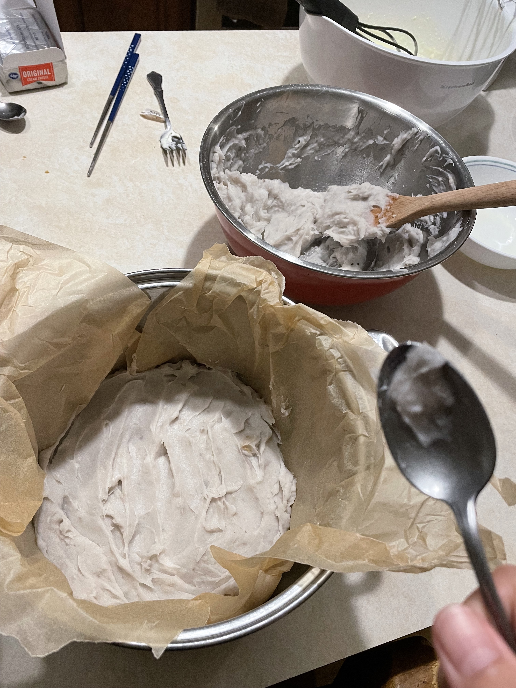
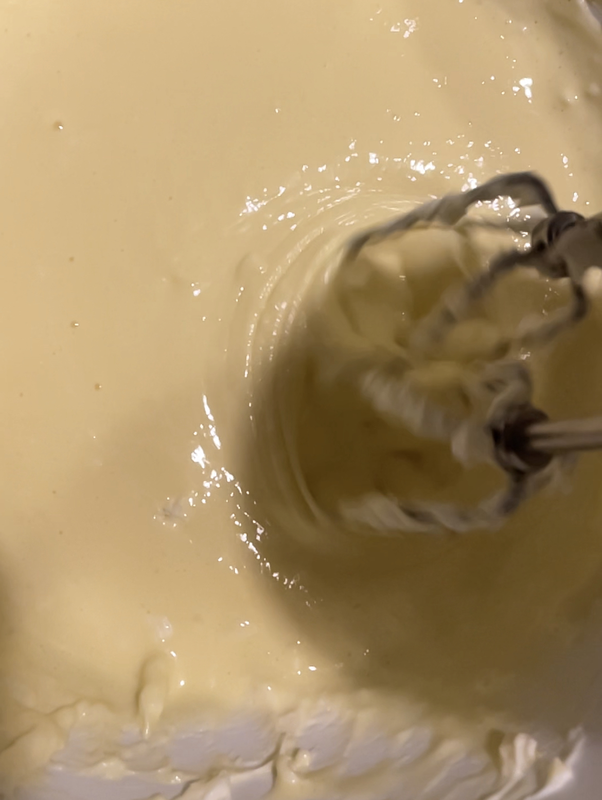
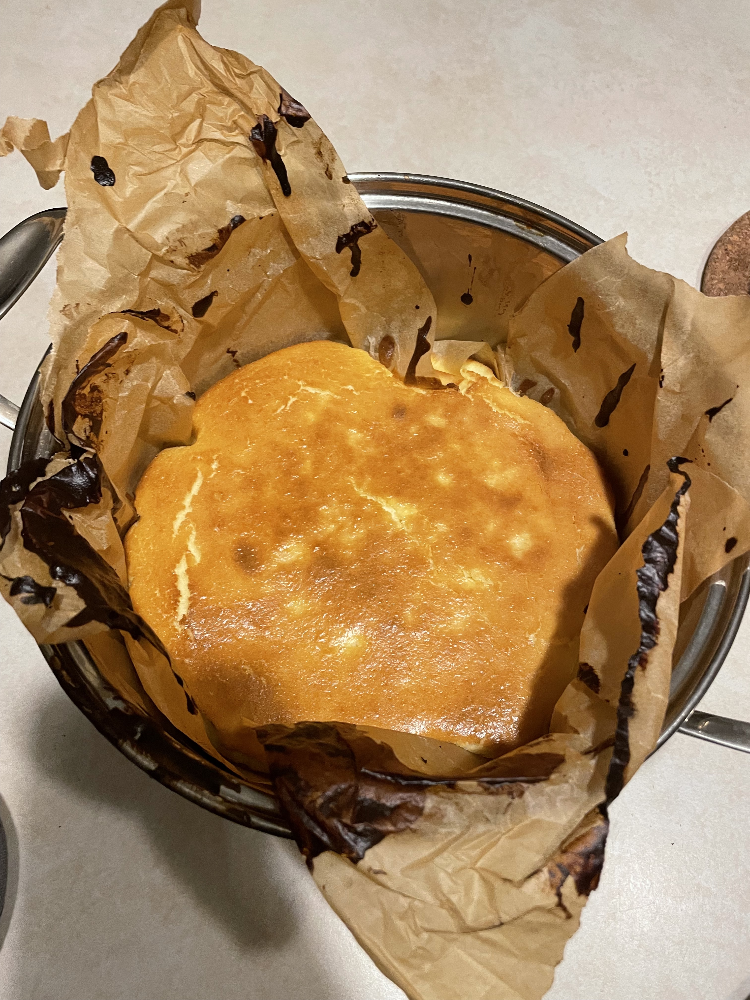
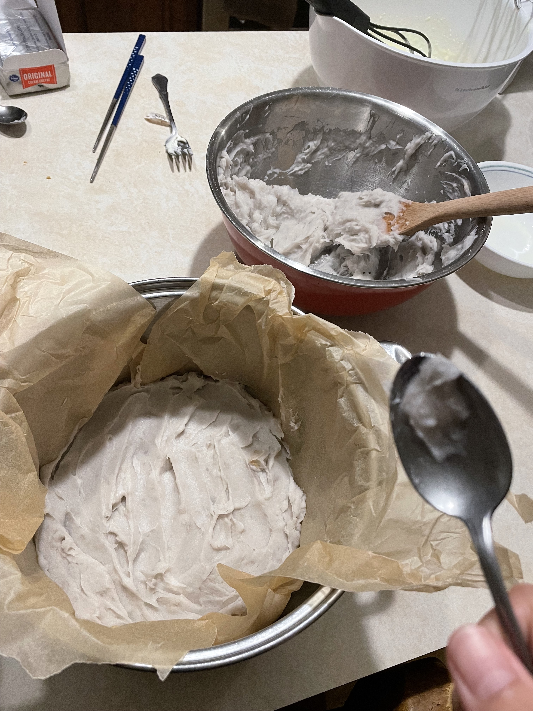
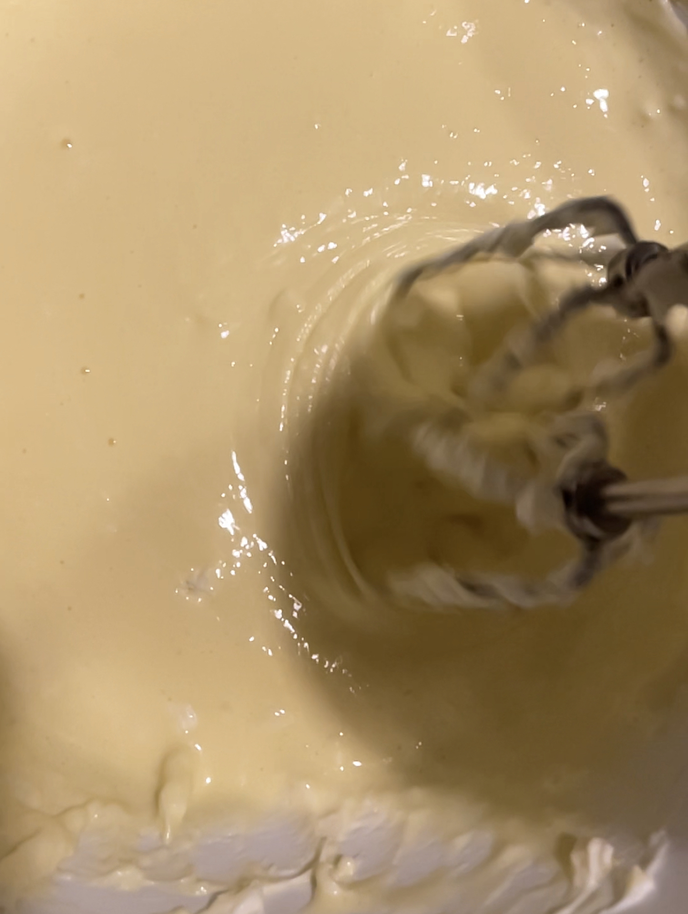
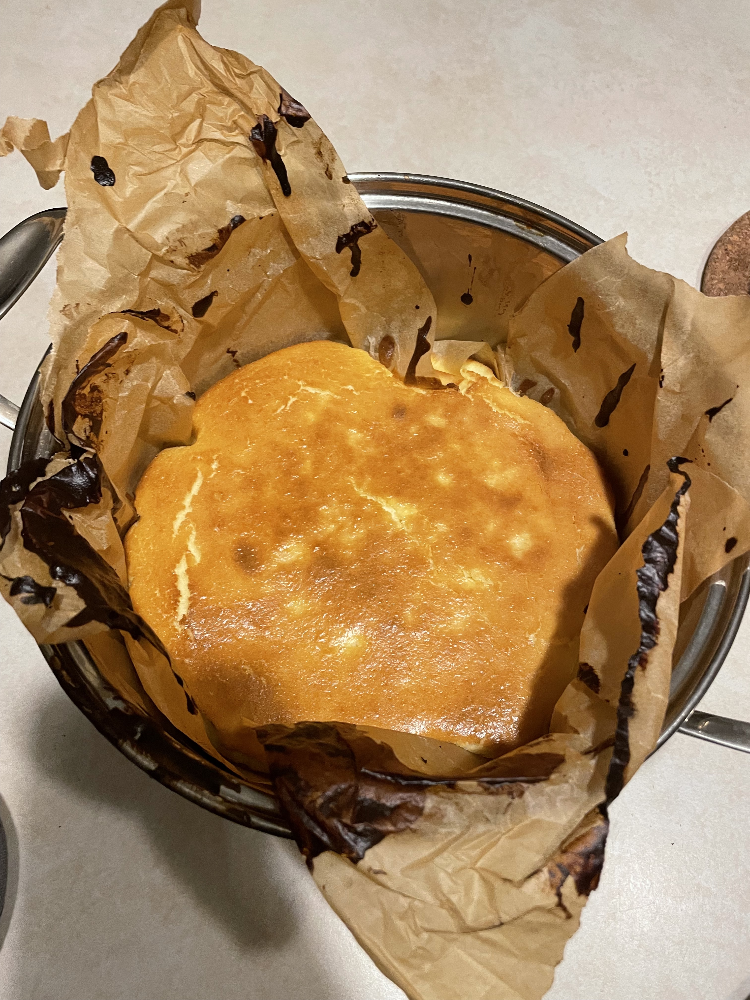
 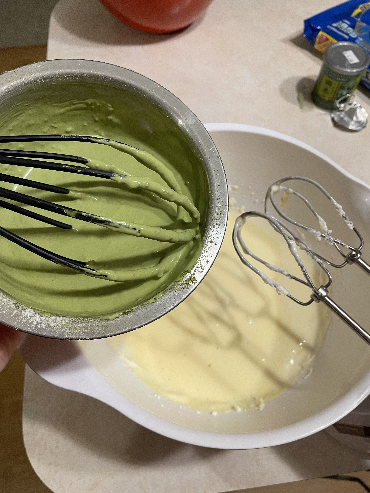
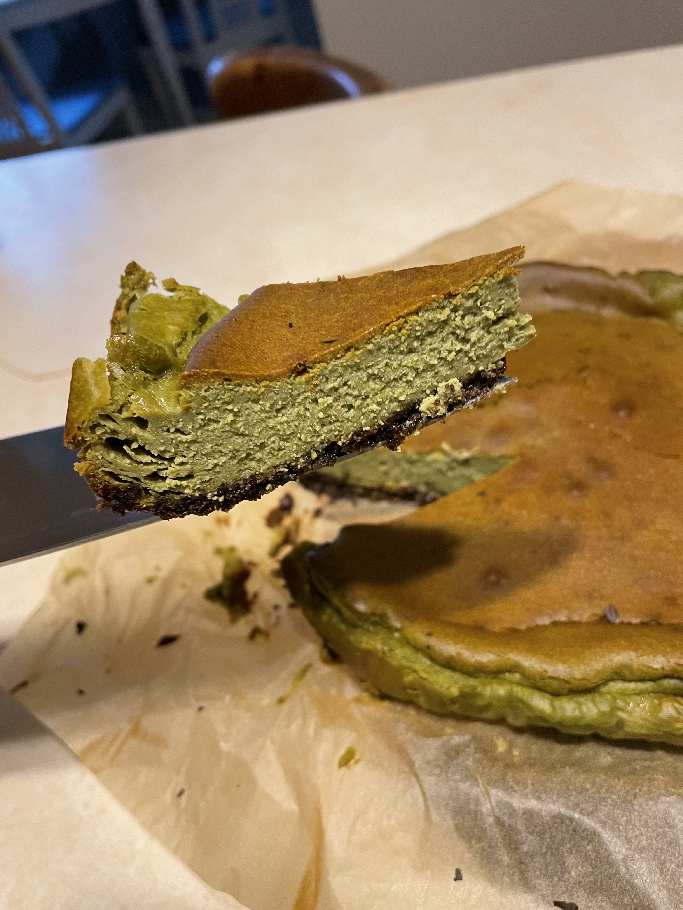
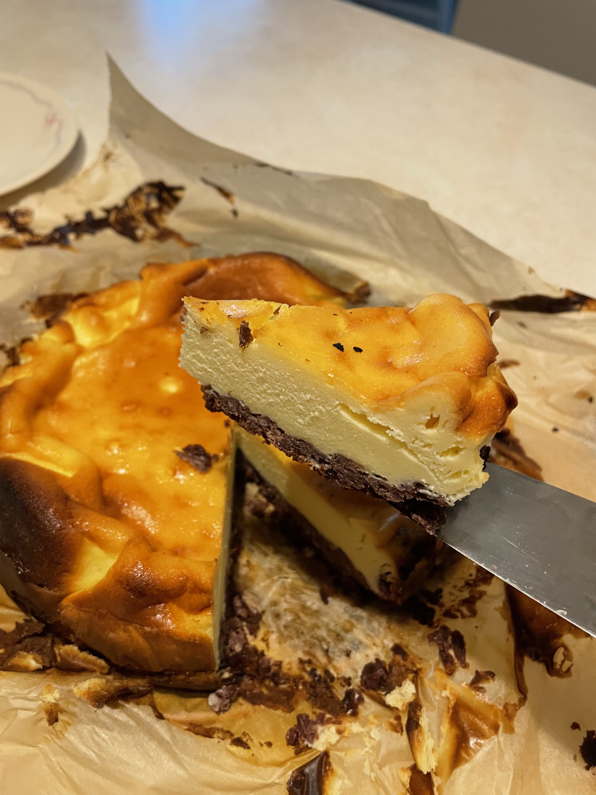
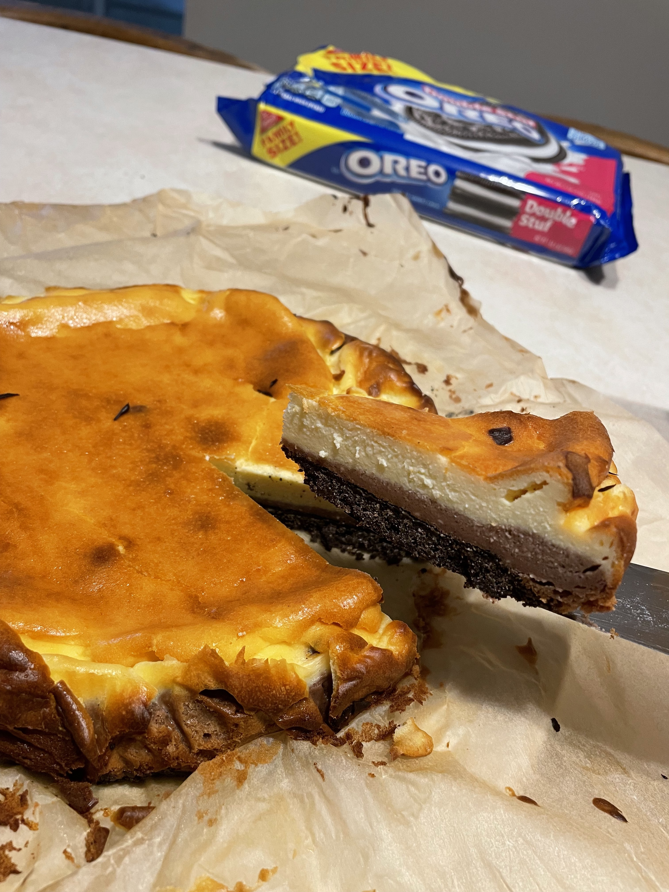
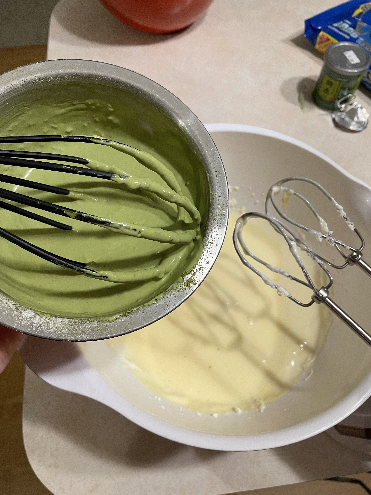
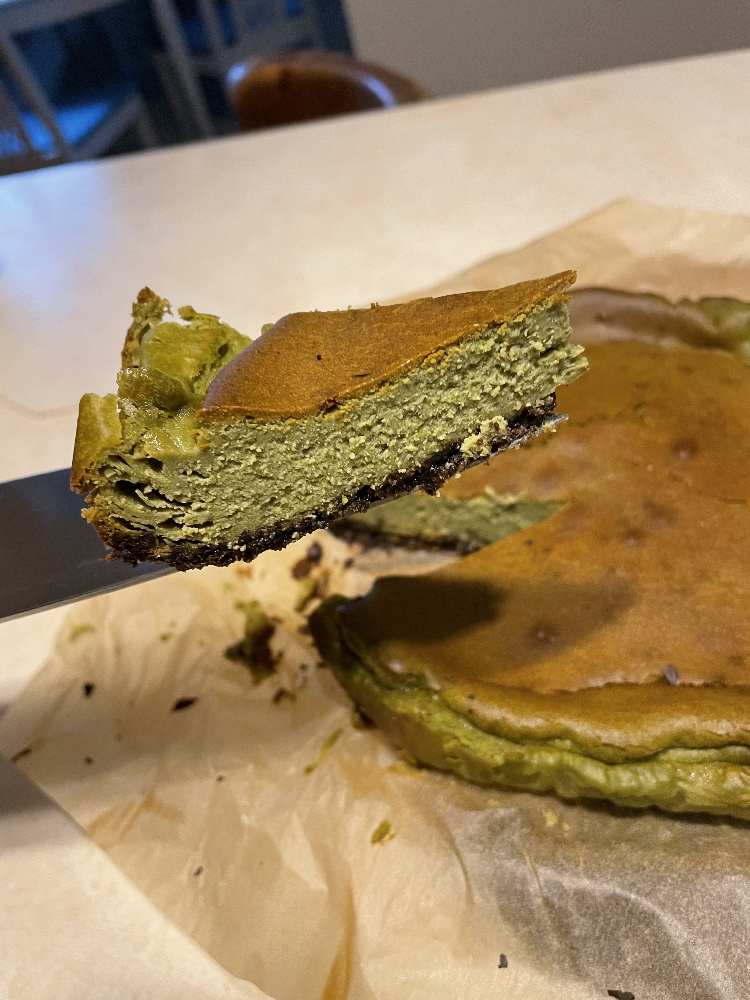
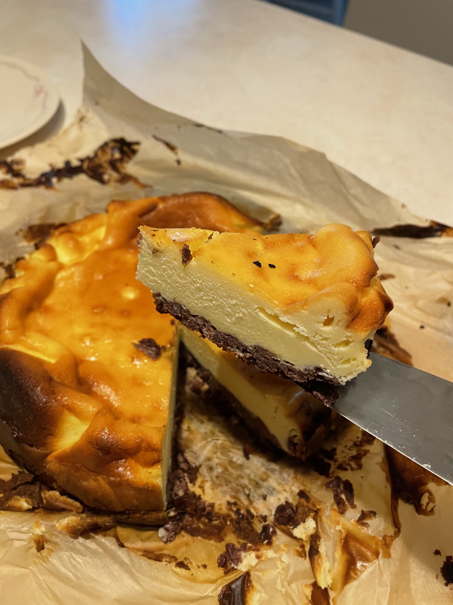
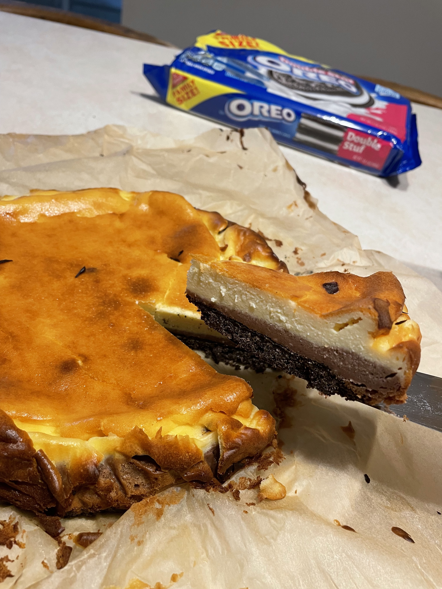
Ingredients: • TARO PASTE: Dajia Taro 300g sugar 45g unsalted butter 15g whipped cream 10g • CHEESECAKE BATTER: Cream cheese (room temperature) 250g Sugar 60g 2 eggs (room temperature) whipped cream 150g
Steps: Taro paste: Mix warm steamed taro, butter, sugar and cream into paste Cheesecake batter: 1. Mix cream cheese and sugar 2. Add the eggs one at a time and mix evenly 3. Add whipped cream Assemble: 1. Put the taro paste on the buttered pan 2. Pour the cheesecake batter through a sieve into the pan Oven & chill: 1. Oven should be preheated o 392°F (200°C). 2. Bake in 392°F (200°C) for 10 minutes. 3. Then bake in 428°F (220°C) for 10 minutes. 4. Cool in fridge overnight before taking out of pan